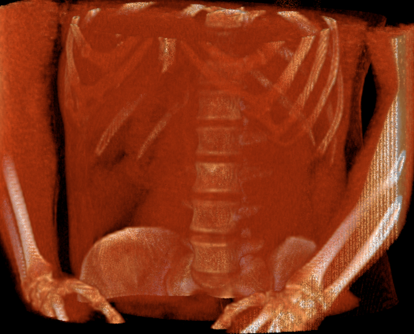

DICOM Slide + dicom-volume
2D, MPR, and 3D in one viewer
The viewer uses local DICOM Slide chunks. MPR and 3D assemble the active series into a volume only when needed.
2 working volumes
457 images
MPR triplanar
Raycasting WebGL2
Zero runtime dependencies
Use ←/→ to change slides. In the viewer, D cycles through 2D, MPR, and 3D; Esc returns to the 2D stack.
